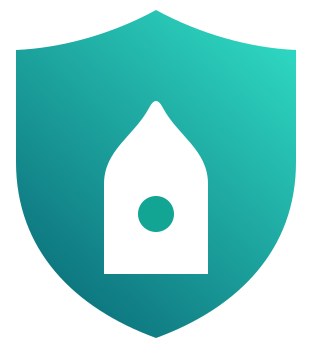

MolidoVPN PWAاتصال، اشتراکها و وضعیت سرویس؛ همه در یک داشبورد ساده.
PWA تونل سیستمعامل را روشن نمیکند؛ دکمهها اشتراک را در کلاینت نصبشده باز میکنند.
اشتراکهای اصلی در دسترساند؛ گزینههای پشتیبان در بخش جداگانه قرار دارند.
پوسته روشن/تیره، نصب روی صفحه اصلی و تازهسازی خودکار.